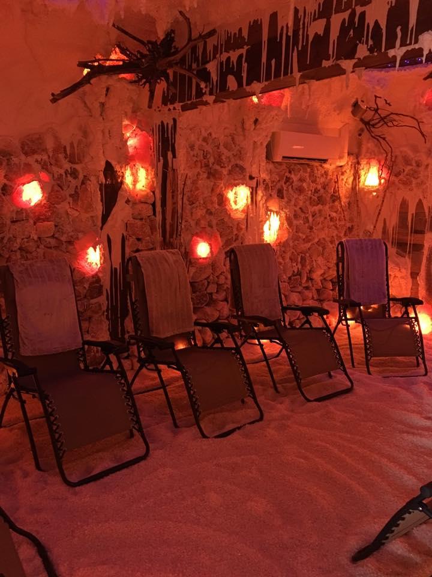

Our Healing Salt Cave®
Our Healing Salt Cave® is a totally unique, man-made, recreation of the environment of a natural underground salt mine in Poland that is naturally pollution free. Salt Caves have been successfully used in Europe for the past several decades for treatment in asthma, allergies, sinusitis and COPD as well as many other common respiratory illnesses such as bronchitis and even dermatological conditions like psoriasis and eczema.


Salt Caves have shown to help with:
- Asthma- Chronic Bronchitis
- Various Breathing Discomforts
- Sinus Infection, Sinusitis, Rhinitis
- Chest Tightness, Coughing
- Dry, Paroxysmal Cough
- Emphysema, Wheezing
- Chronic ENT Illnesses (ear-nose-throat)
- Allergies
- Eczema, Psoriasis, Acne
- Colds, Flu, Mucus Plugs
- Sleep Disorders
- Snoring due to respiratory conditions
- Anxiety, Depression, Stress, Exhaustion
- Thyroid Problems
- Diabetics
- Viral Infection, Cystic Fibrosis
- Pneumonia following acute Stage
- Chronic Obstructive Pulmonary Disease
- Pharyngitis
- Migraines / Headaches
- Hangovers
- Improves Lung Function
- Improves Immune System
Salt therapy is also helpful to those seeking optimal respiratory function for activities such as:
- Athletic performance (swimming, running, biking, tennis, dancing, etc.)
- Vocal performance (singing, public speaking, etc.)
FAQ
Our cave is just under 350 square feet and filled with 8 tons of the purest salt on earth from Klodawa, Poland. The temperature and humidity are controlled to recreate the micro-climate of the actual salt mines in Poland. We encourage you to lay back in the zero-gravity chair, cover up with a provided blanket, close your eyes and just relax for your 45-minute treatment. The temperature is kept between 62-64 degrees F so if you tend to get chilly, please bring a sweater or sweatshirt to wear while in the cave.
There is no steam in the cave so you should not perspire during your session.
If you have Claustrophobia, you are welcome to stop in and check it out to make sure you feel comfortable. We just ask that you arrive at the top of the hour so we do not need to interrupt a current session.
Due to the large amount of negative ions in the atmosphere, clients tend to experience deep relaxation and a sense of calm during the 45 minute session. The lights are dim and soft and relaxing music is played. Most clients tend to relax, meditate or take a nap. Whatever makes you most comfortable is recommended but please keep in mind other clients in the cave.
Please drink some water and use the restroom before starting your salt cave session so you do not have to leave and disturb others during the session. We also ask that you drink plenty of water after your session. Your lips might taste a little salty and you might feel a tickle in your throat but it will all go away after you have some water. That is expected, especially when you first start visiting us. This is a natural, drug-free treatment and you should not experience any side effects.
It is not uncommon to experience increased sinus draining and coughing after a Halotherapy treatment. This is the body’s way of responding to the salt treatment by releasing the accumulated mucus.
AURA salt cave is a place of tranquility, quietness and relaxation. Please respect others as well as our beautiful salt cave.
No cell phones, tablets or laptops are recommended in the cave.
We have the right to end your session and kindly ask you to leave without a refund if you disrespect others or anything in our wellness center.
Our salt cave in East Amherst, NY is just under 350 square feet. If you have Claustrophobia, you are welcome to stop in and check it out to make sure you feel comfortable. We just ask that you arrive at the top of the hour so we do not need to interrupt a current session.
Scheduled therapy spaces are reserved and a 24 hour advance notice is appreciated to cancel any service.
AURA salt cave and wellness is a place of tranquility, quietness and relaxation. Please kindly respect others by refraining from talking during your Halotherapy session.
Every session starts promptly at the top of the hour and lasts 45 minutes. If you are late for your scheduled appointment, you are welcome to join the next session if there is space available.
Please arrive 10-15 minutes early. Paperwork will need to be completed during your first visit so allow ample time.
Please do NOT come for a treatment during any active stage of any contagious disease. We highly recommend that you consult with your doctor or physician if you have any concerns before starting salt treatments. People not advised to do salt therapy are those experiencing:
- Infections accompanied by fever
- Acute active tuberculosis
- Cardiac insufficiency
- Bleeding / Spitting of blood
- Alcohol or drug intoxication
- Unstable or uncontrolled hypertension
- Acute / Infectious stages of respiratory disease (flu, cold, acute bronchitis)
Please wear comfortable clothing. The salt in the air will not ruin any clothing; however, it may leave a light dusting of salt which is usually noticeable on darker clothing and can simply be brushed off. Because the cave can be a little chilly, blankets are provided. If you are visiting for skin treatments, shorts and a short sleeve t-shirt is recommended so the salt particles may absorb onto any exposed skin.
PLEASE avoid wearing perfumes / after shave or any other fragrances before the session to respect those that may have allergies or other reactions to fragrances.
If you are a smoker, please wear fresh clothes and use mint mouth wash (or something similar) right before your session so you do not disturb others with the odor of nicotine and please remember, others may be allergic to smoke.
Shoe covers will be provided and MUST be worn at all times while in the salt cave. We prefer you remove your shoes but the protective covering MUST still be worn. It helps us protect the 3-4" of salt that covers the floor.
NO food or drinks are allowed in the salt cave at any time since it is a controlled, sterile micro-climate. Accommodations can be made if there is a medical condition that demands the use of water during the your therapy session.
Do NOT leave any valuables in our facility unattended as we will not be responsible for any stolen or lost items.
It is best to leave cell phones, tablets, laptops and other small electronic devices locked in your car. Any items taken into the salt cave are exposed to the dry salt aerosol which may damage the circuitry. It is at the owner's risk and we will not be responsible for any damages.
Please do NOT touch the walls and ceiling and do not throw the salt.
Cameras are installed in the salt cave for your safety.
It is important to drink plenty of water before and after your treatment.
Dress comfortably in attire that would be appropriate in a public place. The salt in the air will not ruin any clothing; however, it may leave a light dusting of salt which is usually noticeable on darker clothing and can simply be brushed off. If you are visiting for skin treatments, shorts and a short sleeve t-shirt is recommended so the salt particles may absorb onto any exposed skin.
We provide shoe covers that MUST be worn at all times while in the cave. We prefer you remove your shoes but the protective covering MUST still be worn. It helps us protect the 3-4" of salt that covers the floor.
PLEASE avoid wearing perfumes, after shave or any other fragrances before the session to respect those that may have allergies or other reactions to fragrances.
If you are a smoker, please wear fresh clothes and use mint mouth wash (or something similar) right before your session so you do not disturb others with the odor of nicotine. Remember, others may be allergic to smoke.
A common worry among clients is, since there are so many sick people going in and out of the salt cave, should they be worried about catching other people's germs or viruses. Salt is anti-bacterial, anti-viral and anti-inflammatory so there is virtually no need to worry. Salt is used to disinfect and there are many particles of it in the air so there is not one area that bacteria would be able to manifest. There is also a UV light which assists in maintaining a virus free environment. It is said that "the micro-climate is two times cleaner in a salt cave than in a sterile surgery room in a hospital". Not only are surfaces sterile but so is the air inside making it almost impossible to catch an infection or sickness.
Absolutely! The cave is 100% natural and there are no contraindications for pregnant women.
Please call us regarding children visiting our Healing Salt Cave®.
This is truly a time for internal reflection and healing. The lights are dimmed and we encourage you to sit back and relax in the anti-gravity chair, cover up with a provided blanket if you are chilly, and let your body rest and repair itself in a gentle way.
No food or drinks are allowed in the salt cave.
We highly recommend that you consult with your doctor or physician if you have any concerns before starting salt therapy treatments especially if you have kidney disease or if you are undergoing chemotherapy.
Treatment should be avoided during the acute phase of any illness including the following: infections accompanied by fever; acute active tuberculosis; cardiac insufficiency; COPD in the third stage*; bleeding, spitting of blood; alcohol or drug intoxication; unstable or uncontrolled hypertension and acute stages of respiratory diseases.
* COPD: 3rd & 4th Stages - It is very possible for you to benefit from salt inhalation therapy, it all depends on your specific condition. We recommend you simply try a session and see how you feel. Please consult with your doctor first if you have any doubts at all. If you use any type of breathing aids and an oxygen tank, we suggest you try a session with your breathing aid equipment on and see how you do. If you feel okay you can come back for a second session and remove the breathing aid equipment for a few minutes at a time and see how you do. If you use a breathing aid and you are not comfortable removing it at all while in the cave, you will simply be breathing in oxygen and you will not benefit from the salt inhalation treatment.
A salt cave is a man-made recreation of the environment of a natural underground salt mine which is naturally pollution free by using technology that precisely infuses pure salt and negative ions into the air. Salt caves are a 100% natural and drug-free treatment for the respiratory system and have been successfully used in Europe for the past several decades for treatment in asthma, allergies and sinusitis as well as many other common respiratory illnesses such as bronchitis and even skin issues such as psoriasis and eczema. Halotherapy, or Salt Therapy, via a man-made salt cave, assists in respiratory therapy via inhalation of dry-salt-aerosol which in the most basic sense helps to soften mucus throughout the respiratory tract. Salt is also anti-bacterial, anti-fungal, anti-microbial, and anti-inflammatory. Halotherapy is a clinically proven natural, safe and beneficial method of treatment for all ages.
The primary acting factor in Halotherapy is dry salt aerosol. A generator, which by means of mechanical action, crushes Pharma grade salt grains into small particles which create a dry salt aerosol. The larger particles are caught in the nose and the throat and the smaller particles penetrate deep into the lungs (the alveoli) and even directly into the blood stream. The air is purified of dust and allergens and kept at a temperature between 62-65 degrees F with the humidity at 50-70%. These elements are crucial for easy inhalation of the dry salt aerosol. The entire salt cave concept is that of a salt cave / salt mine micro-climate replica. The air must be pure so our salt cave has its own separate air filtration and cooling system separate from the rest of the building. We also have a UV light and filter as you enter the cave to help kill any bacteria and viruses the salt doesn't already take care of. All elements are controlled in order to maintain the perfect environment so Halotherapy may be performed in its ideal state.
Salt aerosol cleanses the human airways like a toothbrush cleans teeth. The dry saline aerosol reduces edema of the mucosal lining, restores the normal transport of mucus, and unclogs blockages in the bronchi and bronchioles. Salt is naturally antibacterial, anti-inflammatory, mucolytic effective, pathogen and allergen free and there are no known interactions with medicine. It contains negative ions which are absorbed through the skin and inhaled into our lungs creating a mind and body balance.
Breathing in this special salt that is dispersed in a specific way has been proven to help with sinus issues as well as a plethora of other ailments. For those without ailments, this experience is a major stress reliever. It is also said to help with energy levels, sleep issues, and overall well-being. A dry throat is sometimes experienced and this is a normal effect.
The Himalayan salt used to build our cave came from Klodawa, Poland and contains 84 trace minerals (potassium, magnesium, chromium, copper, selenium, etc.) and is the purest form of salt on Earth. Other activities such as Yoga, Pilates and Meditation can be held in our salt cave to enhance the experience. Mineral deficiency is on the rise with over 50% of the population found to be suffering from lack of adequate minerals. Poor diet, water softeners, and even certain medications can cause a leaching of minerals from your body. A body deficient in minerals can lead to a variety of chronic illnesses as well as dental issues, irritated skin, muscle pain, and hormone instability.
The number of treatments needed depends on the illness and the seriousness of the illness. Everyone is different and reacts to the treatment differently. Some notice effects after merely a few minutes and others after a few sessions. Keep in mind Halotherapy is not a get healthy quick, instant relief steroid inhaler. It is a drug-free all natural holistic treatment of the respiratory system that takes time. The average number of sessions recommended by doctors in Europe is between 12-14.
There is research that dates back over 100 years and over the past century doctors and scientists have been supporting natural salt as a healthy alternative to the treatment of the respiratory system in the form of Halotherapy. Going back to 1843, a Polish doctor by the name of Dr. Felix Boczkowski recognized the effects of salt on the workers in the Wieliczka salt mine in Poland. He was the first to publish a written book which included texts about Salt Therapy. After him was a German doctor by the name of Dr. Karl Hermann Spannagel who noticed improvements in the health of his patients as they hid in the Kluterthohle karst salt cave during WWII. He was the next major physician who backed the irrefutable evidence of his patients. Finally, in more recent years, Prof. Alina V. Chervinskaya, M.D., Ph.D. has spent the last 20 years devoting her life to supporting, developing and implementing the care that is now known as Halotherapy.
For more information, please click here.
AURA salt cave and wellness cannot make any medical claims regarding this information and we recommend all medical conditions be treated by a physician. We only provide this information about salt therapy as an opinion and do not infer the treatments and/or products and services are medically accepted. We take absolutely no responsibility for individuals who choose to utilize our services in place of a medical practitioner.